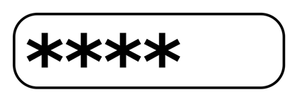

Prev - #18 Buy 8 Get 1 Free | Table of Contents | Next - #20 Leap Year
generatePassword(12) → 'v*f6uoklQJ!d'
generatePassword(12) → ' Yzkr(j2T$MsG'
generatePassword(16) → '
UVp7ow8T%5LZl1la'

While a password made from a single English word like “rosebud” or “swordfish” is easy to remember, it isn’t secure. A dictionary attack is when hackers program their computers to repeatedly try logging in with every word in the dictionary as the password. A dictionary attack won’t work if you use randomly generated passwords. They may not be easy to remember, but they make hacking your accounts more difficult.
Exercise Description
Write a generatePassword() function
that has a length parameter. The length parameter is an integer of how many characters the generated
password should have. For security reasons, if length
is less than 12, the function forcibly sets it to 12
characters anyway. The password string returned by the function must have at
least one lowercase letter, one uppercase letter, one number, and one special
character. The special characters for this exercise are ~!@#$%^&*()_+.
Your solution should import Python’s random
module to help randomly generate these passwords.
These Python assert statements stop
the program if their condition is False. Copy them
to the bottom of your solution program. Your solution is correct if the following
assert statements’ conditions are all True:
assert len(generatePassword(8)) == 12
pw = generatePassword(14)
assert len(pw) == 14
hasLowercase = False
hasUppercase = False
hasNumber = False
hasSpecial = False
for character in pw:
if character in LOWER_LETTERS:
hasLowercase = True
if character in UPPER_LETTERS:
hasUppercase = True
if character in NUMBERS:
hasNumber = True
if character in SPECIAL:
hasSpecial = True
assert hasLowercase and hasUppercase and hasNumber and hasSpecial
Try to write a solution based on the information in this description. If you still have trouble solving this exercise, read the Solution Design and Special Cases and Gotchas sections for additional hints.
Prerequisite concepts: import
statements, random module, strings, string concatenation,
len(), append(), randint(), shuffle(), join()
Solution Design
First, you’ll need to create constant strings for each category of characters required by the exercise:
· Lowercase letters: abcdefghijklmnopqrstuvwxyz (26 characters)
· Uppercase letters: ABCDEFGHIJKLMNOPQRSTUVWXYZ (26 characters)
· Numbers: 1234567890 (10 characters)
· Special characters: ~!@#$%^&*()_+ (13 characters)
Next, create a string that concatenates all four strings into one 75-character string. These variables are constants in that they aren’t meant to have their contents changed. By convention, constant variables are typed with ALL_UPPERCASE names and have underscores to separate words by convention. Constants are often created in the global scope outside of all functions, rather than as local variables inside a particular function. Constants are commonly used in all programming languages, even though the term “constant variable” is a bit of an oxymoron.
The first line of the generatePassword()
function should check if the length argument is less
than 12, and if so, set length
to 12. Next, create a password
variable that starts as an empty list. Then randomly select a character from
the lowercase letter constant using Python’s random.randint()
function to pick a random integer index from the constant’s string. Do this for
the other three constants as well.
To guarantee that the final password has at least one character from each of the four categories, we’ll begin the password with a character from each category. Then we’ll keep adding characters from the combined string until the password reaches the required length.
But this isn’t completely random since the first four characters
are from predictable categories. To fix this issue, we’ll call Python’s random.shuffle() function to mix up the order of the
characters. Unfortunately, the random.shuffle()
function only works on lists, not strings, so we build up the password from an
empty list rather than an empty string.
In a loop, keep adding a randomly selected character from the
concatenated string with all characters until the password
list is the same length as length. Then, pass the
password list to random.shuffle() to mix up the
order of the characters. Finally, combine this list of strings into a single
string using ''.join(password) and return it.
Special Cases and Gotchas
The random.shuffle() function only
works with list values and not string values. This is why we add
single-character strings to a list, shuffle it, and combine that list of
strings into a single string with the join() string
method. Otherwise, passing a string to random.shuffle()
results in a TypeError: 'str' object does not support item
assignment error message.
Now try to write a solution based on the information in the previous sections. If you still have trouble solving this exercise, read the Solution Template section for additional hints.
Solution Template
Try to first write a solution from scratch. But if you have difficulty, you can use the following partial program as a starting place. Copy the following code from https://invpy.com/passwordgenerator-template.py and paste it into your code editor. Replace the underscores with code to make a working program:
# Import the random module for its randint() function.
import ____
# Create string constants that for each type of character:
LOWER_LETTERS = 'abcdefghijklmnopqrstuvwxyz'
UPPER_LETTERS = 'ABCDEFGHIJKLMNOPQRSTUVWXYZ'
NUMBERS = '1234567890'
SPECIAL = '~!@#$%^&*()_+'
# Create a string that has all of these strings combined:
ALL_CHARS = LOWER_LETTERS + ____ + ____ + ____
def generatePassword(length):
# 12 is the minimum length for passwords:
if length ____ 12:
length = ____
# Create a password variable that starts as an empty list:
password = []
# Add a random character from the lowercase, uppercase, digits, and
# punctuation character strings:
password.append(LOWER_LETTERS[random.randint(0, 25)])
password.____(UPPER_LETTERS[random.randint(0, ____)])
password.____(NUMBERS[random.randint(0, ____)])
password.____(SPECIAL[random.randint(0, ____)])
# Keep adding random characters from the combined string until the
# password meets the length:
while len(password) < ____:
password.append(ALL_CHARS[random.randint(____, 74)])
# Randomly shuffle the password list:
random.shuffle(____)
# Join all the strings in the password list into one string to return:
return ''.join(____)
The complete solution for this exercise is given in Appendix A and https://invpy.com/passwordgenerator.py. You can view each step of this program as it runs under a debugger at https://invpy.com/passwordgenerator-debug/.
Further Reading
Most random
number generator (RNG) algorithms are pseudorandom: they appear
random but are actually predictable. Pseudorandom algorithms have an initial
value (often an integer) called a seed, and the same starting seed value
produces the same random numbers. For example, you can reset Python’s seed by
passing a seed integer to random.seed(). Notice how
setting the same seed in the following interactive shell example produces the
same sequence of “random” numbers:
>>> import random
>>> random.seed(42) # Use any arbitrary integer for the seed.
>>> for i in range(20):
... print(random.randint(0, 9), end=' ')
...
1 0 4 3 3 2 1 8 1 9 6 0 0 1 3 3 8 9 0 8
>>> random.seed(42) # Reset using the same integer seed.
>>> for i in range(20):
... print(random.randint(0, 9), end=' ')
...
1 0 4 3 3 2 1 8 1 9 6 0 0 1 3 3 8 9 0 8
Python can also generate truly random, not pseudorandom, numbers
based on several sources of systems entropy such as boot time, process IDs,
position of the mouse cursor, millisecond timing in between the last several
keystrokes, and others. You can look up the official Python documentation for
the random.SystemRandom() function at https://docs.python.org/3/library/random.html.
These theoretical hacks on pseudorandom numbers might concern you if you’re an international spy or a journalist targeted by the intelligence agencies of nation-states, but in general, using this program is fine. Randomly- and pseudorandomly-generated passwords are still better than using a predictable password like “Stanley123”. And many hacks happen because people have keystroke-reading malware on their computers or reuse the same password for multiple accounts. So if the password database of a website you use is hacked, those hackers can then try to identify the users’ accounts on other popular websites and try those same passwords.
A password manager app is the most effective single thing a computer user can have to increase their security. When you need to log into a website, you enter your master password into the password manager app to unlock its encrypted database. Then you can copy the password from the manager to the clipboard. For example, your password could be something like GKfazu8WposcVP!EL8, but logging in with it is just a matter of pressing Ctrl-V to paste it into the website’s login page.
I recommend the free and open-source KeePass app from https://keepass.info, but many password manager apps are freely available.
Prev - #18 Buy 8 Get 1 Free | Table of Contents | Next - #20 Leap Year